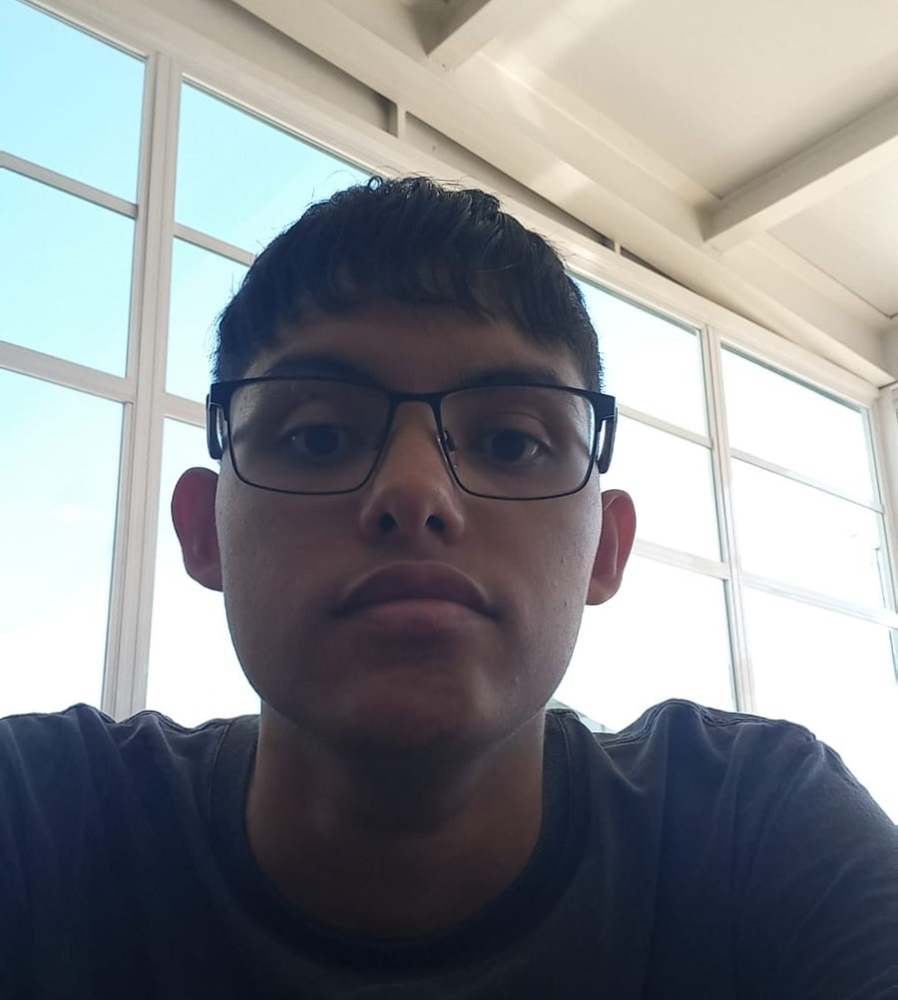

Quem Sou Eu?

Um resumo sobre mim
Meu nome é Douglas, sou um jovem de 17 anos e estou cursando a Fatec de São José dos Campos. Desde muito cedo, meu interesse pela tecnologia despertou minha curiosidade e me impulsionou a explorar esse fascinante mundo.
Ao ingressar na Fatec, encontrei o ambiente perfeito para aprimorar meus conhecimentos. As aulas teóricas e práticas têm sido enriquecedoras, permitindo-me entender os fundamentos e as aplicações da tecnologia de forma mais profunda.
Desde que coloquei minhas mãos em um computador, percebi que a linguagem dos códigos me fascinava e me permitia expressar minha criatividade de maneiras inimagináveis. Agora, estou ansioso para aprofundar meus conhecimentos nessa área promissora e desafiadora, aproveitando todas as oportunidades que a FATEC me proporcionará. Tenho certeza de que essa jornada será repleta de desafios e conquistas, mas estou determinado a superar cada obstáculo e alcançar meu objetivo de me tornar um desenvolvedor de destaque. Com dedicação e perseverança, sei que posso transformar minhas habilidades em algo significativo para o mundo e deixar minha marca na indústria da tecnologia.
Ingressar na FATEC foi um marco significativo nessa jornada. Ao entrar na faculdade, pude mergulhar em um ambiente de aprendizado que valoriza a prática, o pensamento crítico e a criatividade. Os professores e colegas compartilham o mesmo entusiasmo pela tecnologia, e isso cria uma atmosfera estimulante para o desenvolvimento de habilidades técnicas e o compartilhamento de ideias.
A FATEC oferece um currículo abrangente, com disciplinas que abordam desde os fundamentos da programação até as mais avançadas tecnologias de desenvolvimento de software. Tenho a oportunidade de aprender linguagens de programação, estruturas de dados, desenvolvimento web e mobile, inteligência artificial e muito mais. Além disso, também tenho acesso a laboratórios equipados com as mais recentes tecnologias, o que me permite colocar em prática o conhecimento adquirido em sala de aula.
Tenho consciência de que o caminho para me tornar um desenvolvedor renomado não será fácil. Haverá momentos de desafio, em que terei que lidar com problemas complexos e enfrentar obstáculos técnicos. No entanto, estou determinado a persistir e a aprimorar minhas habilidades, pois sei que cada dificuldade superada será um degrau a mais em direção ao meu objetivo.
Além dos estudos acadêmicos, também busco complementar minha formação por conta própria. Participar de projetos de código aberto, cursos online e comunidades de desenvolvedores me permite expandir meus conhecimentos e me manter atualizado sobre as tendências do setor. Acredito que é essencial estar em constante aprendizado nessa área em constante evolução.
{% endblock %}